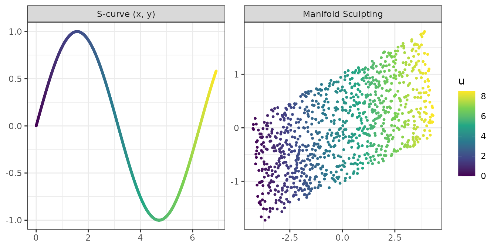
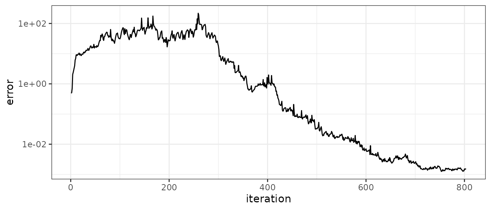

Manifold Sculpting (Gashler, Ventura and Martinez, 2008) is a nonlinear dimensionality reduction method. Like Isomap or locally linear embedding (LLE), it assumes that the data lie on a low-dimensional manifold, and it looks for coordinates on that manifold by preserving the relationships between neighboring points. Unlike these methods, it does not solve an eigenproblem: it transforms the data iteratively.
This vignette explains the algorithm, its parameters, and its use with recipes.
The algorithm
-
Neighbors. The
knearest neighbors of each point are found. - Relationships. For each point \(p_i\) and neighbor \(n_{ij}\), the distance \(\delta_{ij}\) between them is recorded, together with the angle \(\theta_{ij}\) formed by \(p_i\), \(n_{ij}\) and \(m_{ij}\), the neighbor of \(n_{ij}\) that is the most colinear with \(p_i\) (the angle closest to \(\pi\)). \(\delta_{ave}\) is the average neighbor distance.
-
Rotation. The data are rotated onto their principal
components. The first
ndimcomponents are the preserved dimensions, the others are the scaled dimensions. - Sculpting. At each iteration, the scaled dimensions are multiplied by the squishing rate \(\sigma\) (0.99), and the preserved dimensions are scaled up until the average neighbor distance is \(\delta_{ave}\) again. The points are then visited breadth-first from a random point, and each one is moved, in the preserved dimensions only, by hill climbing on the error \[ \epsilon_i = \sum_j w_{ij} \left[ \left(\frac{\delta_{ij} - \delta_{ij}^0}{\delta_{ave}}\right)^2 + \max\left(0, \frac{\theta_{ij}^0 - \theta_{ij}}{\pi}\right)^2 \right] \] where the superscript 0 marks the original values, and the neighbors that have already been moved in this iteration weigh more.
- Projection. Once the scaled dimensions are negligible, they are dropped.
Scaling the extra dimensions down slowly, instead of dropping them, keeps the configuration close to an optimal one at each step: the manifold is gradually flattened, and the hill climbing restores its local geometry as it goes. The iterations stop once the scaled dimensions have shrunk below 1% of their size and the error has stopped improving.
The details follow the reference implementation of the authors, in the Waffles library: the weighting and normalization of the error, the angle term that only penalizes angles that close (a manifold is unfolded by opening its angles), and a step size that adapts to the number of productive hill-climbing steps.
An example: the S-curve
sim_s_curve() simulates the S-curve of the paper, a
sheet bent into the shape of a sine wave, with its intrinsic coordinates
u (the arc length) and v.
set.seed(1)
curve <- sim_s_curve(1000)
x <- curve[c("x", "y", "z")]
set.seed(2)
fit <- manifold_sculpting(x, ndim = 2, neighbors = 14)
fit
#> Manifold Sculpting embedding
#> * 1000 samples, 3 variables to 2 dimensions
#> * 14 neighbors, squishing rate 0.99
#> * 803 iterations (converged), final error 0.001557
library(ggplot2)
panels <- rbind(
data.frame(panel = "S-curve (x, y)", d1 = curve$x, d2 = curve$y, u = curve$u),
data.frame(panel = "Manifold Sculpting", d1 = fit$embedding[, 1],
d2 = fit$embedding[, 2], u = curve$u)
)
panels$panel <- factor(panels$panel, levels = unique(panels$panel))
ggplot(panels, aes(d1, d2, color = u)) +
geom_point(size = 0.7) +
facet_wrap(~panel, scales = "free") +
scale_color_viridis_c() +
labs(x = NULL, y = NULL) +
theme_bw()
Manifold Sculpting preserves distances, so the embedding matches the intrinsic coordinates up to a rotation and a translation, without rescaling. With the best rotation:
Convergence and local minima
fit$error holds the total error at each iteration. It
grows while the manifold is flattened, then falls as the points settle
once the scaled dimensions have nearly vanished:
ggplot(data.frame(iteration = seq_along(fit$error), error = fit$error),
aes(iteration, error)) +
geom_line() +
scale_y_log10() +
theme_bw()
Like any local optimization, a run can end in a local minimum, where
a part of the manifold is folded over another. Such runs end with a much
larger error than runs that unfold the manifold. The risk depends on the
manifold: the S-curve is reliably unfolded with 14 neighbors, while the
Swiss roll, which must be unrolled over more than a full turn, needs
more neighbors: with 20 neighbors, about one run in seven stays folded
on 2000 points, and more on sparser samples. nstart makes
several runs, which differ by their random traversals, and keeps the one
with the lowest final error. Here, on 1000 points, two of the three runs
stayed folded:
set.seed(3)
roll <- sim_swiss_roll(1000)
set.seed(4)
fit_roll <- manifold_sculpting(roll[c("x", "y", "z")], neighbors = 20, nstart = 3)
fit_roll$final_error
#> [1] 0.03291126 96.08915495 432.74720341Parameters
-
ndim: the number of dimensions of the embedding. -
neighbors: the size of the neighborhoods. Too few neighbors make folded embeddings more likely and slow down the convergence; too many connect points across the folds of the manifold, which then cannot be unfolded. -
squishing_rate: the factor by which the scaled dimensions shrink at each iteration. With 0.99, it takes about 460 iterations to reduce them to 1% of their size; with 0.95, about 90, at the cost of a rougher path. -
nstart: the number of runs. -
init: the starting configuration. The default is the rotation onto the principal components. The paper notes that Manifold Sculpting can also refine the result of another method: pass a matrix with one row per sample, whose firstndimcolumns are refined (any other columns are scaled down).
Distances are Euclidean, so variables on different scales should be standardized first.
New samples
predict() embeds new samples. Each new sample is placed
at the combination of the embeddings of its training neighbors given by
its locally linear reconstruction weights (as in LLE), then moved to
minimize the Manifold Sculpting error against these neighbors, whose
embeddings are held fixed. The second stage matters when a new sample
lies outside the region covered by its neighbors, where the
reconstruction weights extrapolate poorly. Samples identical to training
samples get their embedding back.
set.seed(5)
idx <- sample(nrow(curve), 800)
set.seed(6)
fit_train <- manifold_sculpting(curve[idx, c("x", "y", "z")], neighbors = 14)
new <- predict(fit_train, curve[-idx, ])
head(new)
#> MS1 MS2
#> [1,] -4.137047 -0.062275176
#> [2,] -4.052189 -0.547476672
#> [3,] -4.103408 0.667855648
#> [4,] -4.002995 -0.551983839
#> [5,] -3.948829 -0.884738259
#> [6,] -4.004315 -0.007156116With recipes and tidymodels
step_manifold_sculpting() makes the method a
preprocessing step. The step has a seed argument so that
the recipe gives the same embedding each time it is trained, and the
other arguments of manifold_sculpting() are given in
options:
train <- curve[idx, ]
test <- curve[-idx, ]
rec <- recipe(v ~ x + y + z, data = train) |>
step_normalize(all_numeric_predictors()) |>
step_manifold_sculpting(all_numeric_predictors(), num_comp = 2,
neighbors = 14, options = list(nstart = 2),
seed = 123)
rec_trained <- prep(rec)
bake(rec_trained, new_data = test)
#> # A tibble: 200 × 3
#> v MS1 MS2
#> <dbl> <dbl> <dbl>
#> 1 1.26 3.73 0.287
#> 2 0.768 3.64 -0.562
#> 3 1.98 3.68 1.55
#> 4 0.760 3.58 -0.574
#> 5 0.424 3.52 -1.16
#> 6 1.30 3.58 0.372
#> 7 1.20 3.48 0.194
#> 8 0.216 3.34 -1.51
#> 9 1.58 3.36 0.859
#> 10 0.954 3.29 -0.223
#> # ℹ 190 more rowsThe step has three tuning parameters, num_comp,
neighbors and squishing_rate, so they can be
chosen by resampling with tune::tune_grid():
rec_tune <- recipe(v ~ x + y + z, data = train) |>
step_manifold_sculpting(all_numeric_predictors(),
neighbors = tune(), squishing_rate = tune())References
Gashler, M., Ventura, D. and Martinez, T. (2008). Iterative non-linear dimensionality reduction with manifold sculpting. In Advances in Neural Information Processing Systems 20, 513–520.
Gashler, M. S. (2011). Waffles: A machine learning toolkit. Journal of Machine Learning Research, 12, 2383–2387.
Roweis, S. T. and Saul, L. K. (2000). Nonlinear dimensionality reduction by locally linear embedding. Science, 290, 2323–2326.